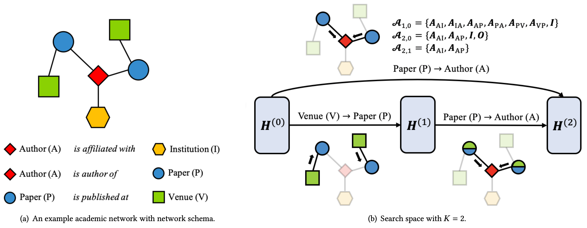
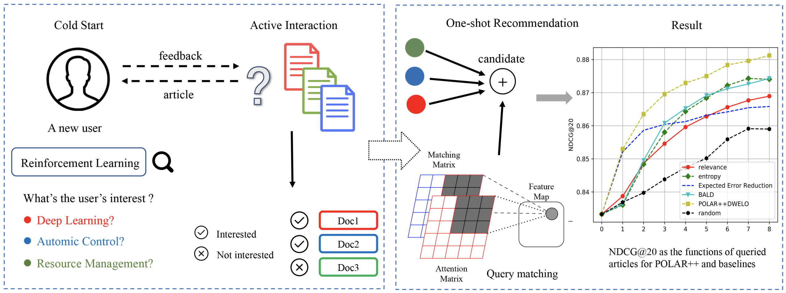
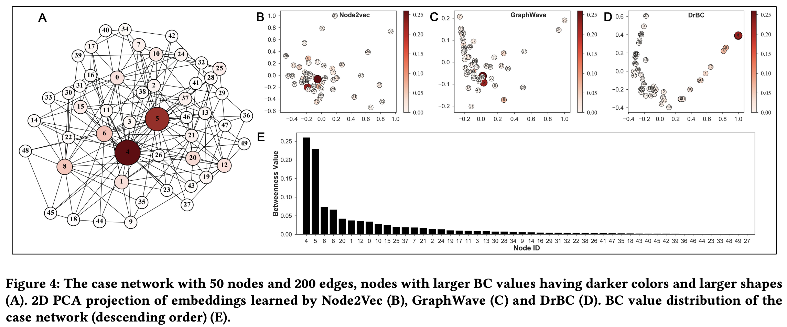
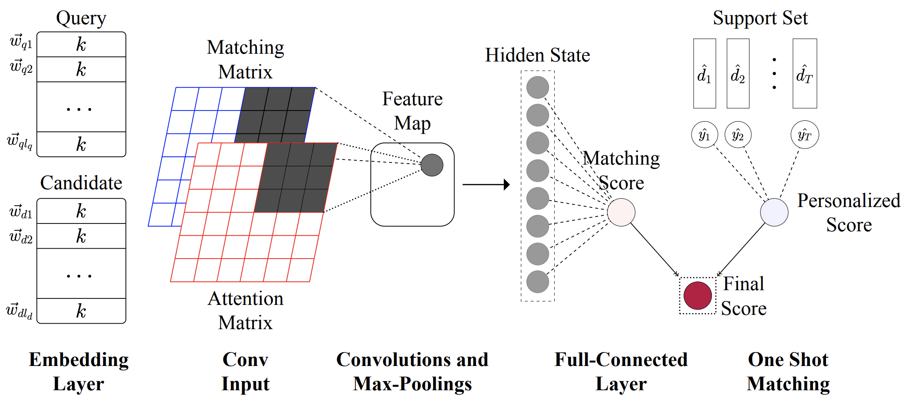

My name is {{ page.me }}.
I have recently obtained a Master of Philosophy in Computer Science and Engineering from
The Hong Kong University of Science and Technology.
My primary research interest lies in optimization for machine learning.
My research goal is to make machine learning more accessible, more robust,
and more broadly applied in science and engineering.
I have been working with my supervisor Prof. Tong Zhang
on automated machine learning (neural architecture search, hyper-parameter optimization
and gradient-based bi-level optimization). I'm also a contributor to the open-source AutoML toolkit
NNI.
I obtained my bachelor's degree in computer science with honors from
Tsinghua University in 2019.




I serve as a reviewer for NeurIPS, ICLR
Basketball is my favorite sport. I have made lots of friends while playing basketball. It is a precious memory for me that we won the championship of our department in the last year of Tsinghua. I like visiting new places and meeting people from different cultures.